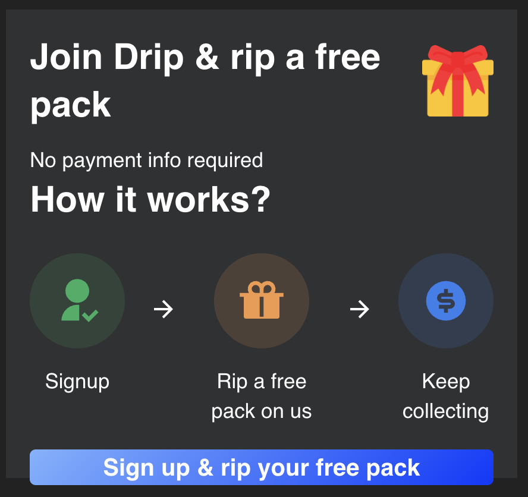
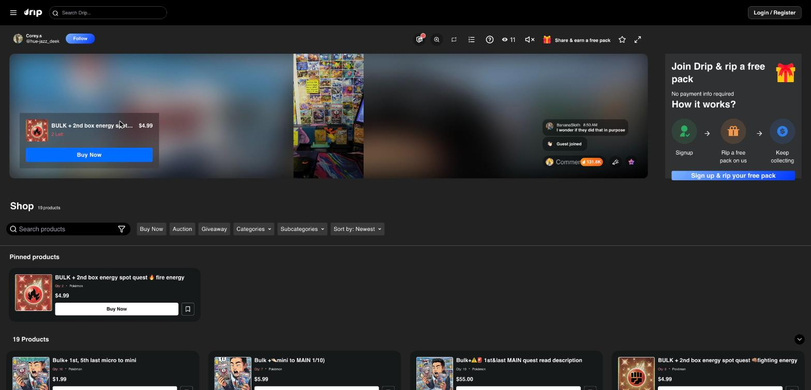
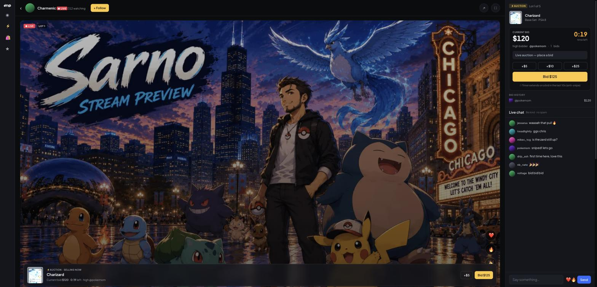
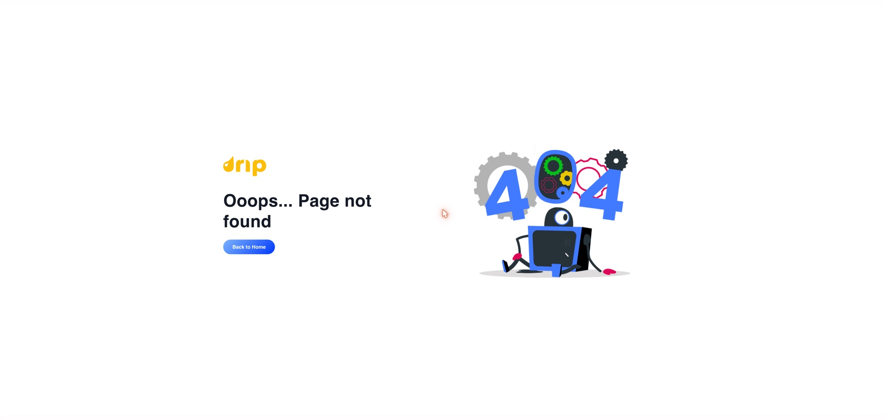

Drip — a walkthrough & where the leverage is
P0 Reliability — verify first
Potentially silent churn. Worth a quick internal test before anything else.
Pages can hang when an ad blocker is on ✓ resolved Jul 19
Browsing with AdGuard active, /streams/home (the Home tab) and the Marketplace hung on blank spinners (15s+). The console showed Statsig’s feature-flag call (featureassets.org) blocked, while the GraphQL socket itself connected fine. Instant Packs and live streams loaded normally — so it’s not universal, but a meaningful slice of the collector/gamer audience runs ad blockers.
Action: load the site in a profile with no ad blocker (or allowlist featureassets.org). If Home/Marketplace still hang, it’s real — the fix is to not gate first render on third-party scripts a chunk of users block.
Re-test: fixed — and stress-tested in the wild: Statsig’s call was returning HTTP 500 for everyone during our pass, yet Home and Marketplace rendered fine. First render is no longer gated on the third-party script. (Their feature-flag service erroring is their vendor’s problem now, not their users’.)
P1 Conversion & the core loop
Where sign-ups and first purchases leak.
No “free pack” payoff after signup partially addressed
The entire logged-out pitch is “Sign up & rip a free pack — no payment info required.” After signing in with Google, I was dropped straight back on the grid — no onboarding, no “here’s your free pack,” no next step. The single biggest promise of the funnel has no landing moment.
Re-test: the pitch is now merchandised harder — logged-out stream pages carry a “Join Drip & rip a free pack” panel (below) with a 3-step “how it works.” Whether the post-signup payoff moment now exists couldn’t be verified without creating an account — but the promise is bigger than ever, which raises the stakes on landing it. Our coded onboarding prototype shows exactly that missing moment.

Jul 19 — the free-pack pitch now shown in-stream to logged-out visitors (signup → rip → keep collecting).Stored-value wallet + a 2% deposit fee is a real conversion tax not re-verified
To buy one $11.77 pack, a new user must first pre-load a balance (min $5), and the fine print reads: “you pay credit + a 2% processing fee; only the credit is added to your balance.” So a first-time buyer pays a fee just to fund the purchase — a trust/friction wall before the first transaction.
Worth discussing: pay-as-you-go for the first purchase, with the wallet as an opt-in power-user feature.
The “live/social” is invisible on desktop still true
Inside a stream, the video floats in the center with ~40% of the screen wasted as blurred dead space on each side, and live chat is collapsed by default behind a “Comment” button. The energy that sells the format — chat, reactions, what’s selling now — isn’t visible to a browsing visitor.
Re-test: the stream page was redesigned (right-rail signup panel, in-stream shop below, picture-in-picture mini-player on scroll) — but chat is still behind a “Comment” button and the dead space remains. The room also rendered with a large blank region below the video in our pass — worth a look as a layout bug.

Live today — video boxed by blurred dead space; chat collapsed behind a “Comment” pill; no auction state visible.
Proposed (prototype) — persistent chat rail, always-on auction module (countdown · quick-bid · history), up-next queue.Login buries Google / Apple still true
The auth modal leads with Phone (SMS) and Connect Wallet; Google/Apple/Facebook are hidden under “Other Login Options” — extra taps for a mainstream collectibles buyer.
Re-test: unchanged — Phone + Connect Wallet first, everything else behind “Other Login Options.”
P2 Perceived quality & polish
Cheap wins that lift the whole feel.
Slow images, no skeletons on the main grids not re-verified
Instant Packs, Live Streams, and the in-stream Shop render as gray/black boxes for ~4–5s before the (great) art loads — first impression reads “broken/empty.” Notably, the Marketplace already uses proper skeleton loaders — the pattern exists in the codebase; it just needs to be applied consistently.
Re-test: pages and art loaded fast in our pass (good network) — couldn’t reproduce either way. Downgrade confidence; verify on a throttled connection.
Deep links & refresh break still true
Direct URLs to /home, /rewards, and /marketplace all 404 (they redirect to /streams/*). Bad for SEO and for sharing a link to any top-level page. Hard refresh also reboots the whole app behind a full-screen spinner.
Re-test: /home and /rewards still 404. Routes have also moved without redirects: Marketplace now lives at /shop, and the old /streams/home (the previous Home tab) now 404s too — yesterday’s shared links are today’s dead ends.
404 page breaks the theme still true
It’s bright white in an otherwise dark app — a jarring flash.
Re-test: unchanged — and with the route moves above, users are more likely to see it.

Jul 19 — the white 404, hit from a previously-valid deep link on the otherwise dark site.The Live Streams page feels empty still true
Only ~4 concurrent streams, one row, ~80% empty page, and no category filters (Instant Packs already has them). No “starting soon,” scheduled, replays, or live-preview thumbnails to fill it or aid discovery.
Re-test: unchanged — 3 live streams, one “Happening Now” row, no filters, no schedule, no replays. The Home tab now merchandises streams much better (categories, featured, RSVP cards) — the Live tab deserves the same treatment.
The first-stream gate is heavy not re-verified
Four manual checkboxes (including “purchases and bids are binding and final”) before you can watch your first stream.
Re-test: no gate appeared when opening streams logged-out — likely logged-in only; not verified this pass.
✓ What’s genuinely working
Say this too — it’s a strong base.
Real assets to build on
Pack/box artwork is excellent — vivid, on-brand, collectible-feeling. Instant Packs is smart, mobile-native merchandising with good category chips. The in-stream Shop is deep (31 products) and well-structured — clear Buy Now / Auction / Giveaway filters and pinned items. Rewards (“Driplets”), referrals, and giveaways give you the retention scaffolding. And Google Pay defaulted correctly after Google login.
Re-test: add shipping velocity to this list — in two weeks the Home tab gained category chips, featured/RSVP stream cards and a live activity feed, the Marketplace got a “$1 Auctions” hook, and the stream page was redesigned. The team moves fast; the fixes above are well within reach.
What we prototyped
A clickable version of the highest-leverage fixes — real Drip art & logo, a working auction engine.
Desktop live room
Fills the dead side-space with a persistent chat rail + always-on Buy/Bid, a first-class auction module (countdown · quick-bid · bid history · anti-snipe), and an up-next queue.
Live discovery
Category filters, Happening now, Starting soon (with reminders), a personalized For you row, and Replays — instead of one sparse row.
Mobile live
Full-screen vertical video with overlaid chat, a pinned buy/bid card in the thumb zone, and a shop bottom-sheet.
Free-pack onboarding
The missing post-signup moment, fully coded: claim → pick what you collect → press-and-hold to rip → your pull (click to enlarge) → drop into a live show. Pairs with the free-pack pitch Drip now runs in-stream.